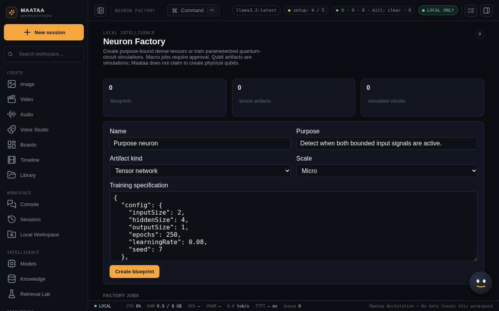

Neuron Factory
Train very small, single-purpose models on this computer — a tiny neural network from examples, or a simulated quantum circuit — then check their quality and approve them.
Neuron Factory (Capabilities) trains very small models that do one job each, entirely on this computer. It does not train or change your Ollama models.

Two kinds
| Kind | What it is | What you give it |
|---|---|---|
| Tensor network | A tiny neural network (one hidden layer) trained on your examples | Input size, output size, and pairs of input and target numbers |
| Qubit circuit simulation | A simulated quantum circuit trained to produce a pattern of outcomes | The number of qubits and layers, and the target probability of each outcome |
Make one
- Give it a Name and a Purpose (8 to 500 characters, saying what it is for).
- Choose the Artifact kind and the Scale.
- Edit the Training specification. Changing the kind fills in a working example (for a tensor network, it learns "both inputs on").
- Press Create blueprint, then Queue training on its card.
Training runs in the background, so you can keep using Maataa. The card shows the job's progress, then the result, including its final loss (how far the outputs are from the targets: lower is better).
Sutra neurons
Start from a sutra offers five ready-made neurons. Each one learns a single vowel-sandhi rule of the Ashtadhyayi:
| Sutra | What it learns |
|---|---|
| 6.1.77 इको यणचि | Before a vowel, इ उ ऋ ऌ (short or long) become य व र ल |
| 6.1.78 एचोऽयवायावः | Before a vowel, ए ओ ऐ औ become अय् अव् आय् आव् |
| 6.1.87 आद्गुणः | अ/आ followed by any vowel become the nearest guna vowel: अ ए ओ अर् अल् (its full domain, with अचि carried over from 6.1.77) |
| 6.1.88 वृद्धिरेचि | अ/आ followed by ए ओ ऐ औ become ऐ or औ |
| 6.1.101 अकः सवर्णे दीर्घः | Two vowels of the same place become its long vowel |
Each vowel is described the way Panini describes it: by its place of articulation (throat, palate and so on) and whether it is long. The neuron trains on all 169 pairs of vowels, with the answers taken from the sutra itself.
- Press Create sutra neuron, then Queue training. Training takes a few seconds.
- Evaluate quality checks the final loss and also tests the neuron against the sutra on all 169 pairs. It passes only if every pair agrees. If any differ, the card lists a few of them.
- Try lets you pick two vowels and compare the neuron's answer with the sutra's.
Each neuron learns its sutra's full domain, as the sutra reads with the words it inherits from earlier sutras (anuvṛtti), and learns it on its own. When several rules apply, the Ashtadhyayi's order of exceptions decides which one wins (for example 6.1.101 over 6.1.77 for इ + इ), not the neuron.
The sutra number on a card opens it in Ashtadhyayi.
Scale
| Scale | Limits | Approval |
|---|---|---|
| Micro | up to 256 examples, 300 training rounds, 16 values wide, 4 qubits | Not needed |
| Macro | up to 2,048 examples, 1,200 rounds, 64 values wide, 8 qubits | Approve macro job before it can train |
Check and approve the result
- Evaluate quality checks the result against a bar: final loss at most 0.08 for a tensor network, or 0.05 for a qubit circuit.
- If it passes, Approve artifact marks it ready to use. Approved results cannot be changed; train a new one instead.
A result that fails the check stays unapproved, and you can change the specification and train again.
Good to know
- If Maataa restarts while a job is training, the job is marked interrupted and the blueprint can be queued again.
- While Maataa is halted with the kill switch in Workbench, new training is refused.
- Blueprints, results and evaluations can only be changed by Maataa itself, not through the general data interface.